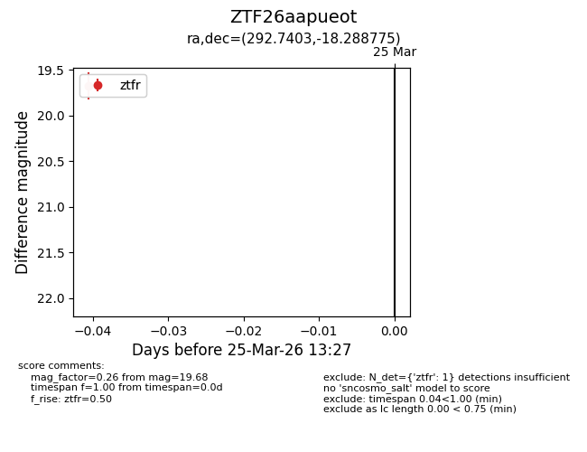
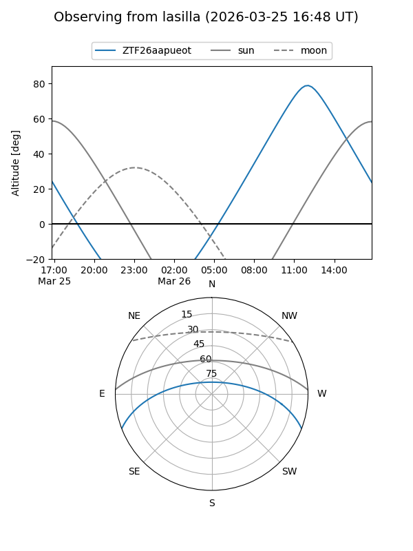
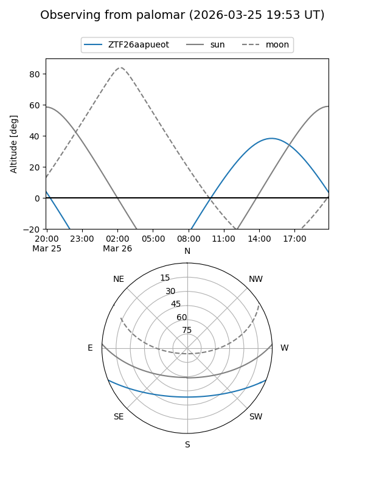

ZTF26aapueot
Target ZTF26aapueot at 2026-03-25 13:29
Aliases and brokers:
FINK: link
Lasair: link
ALeRCE: link
alt names
ZTF26aapueot (ztf,fink_ztf)
Coordinates:
equatorial (ra, dec) = 292.7403,-18.28878
equatorial (HMS+DMS) = 19:30:57.67,-18:17:19.59
galactic (l, b) = (20.5712,-16.74408)
Flags:
Photometry:
last ztfr=19.68
1 ztfr detections
Lightcurve

Visibility


Additional plots